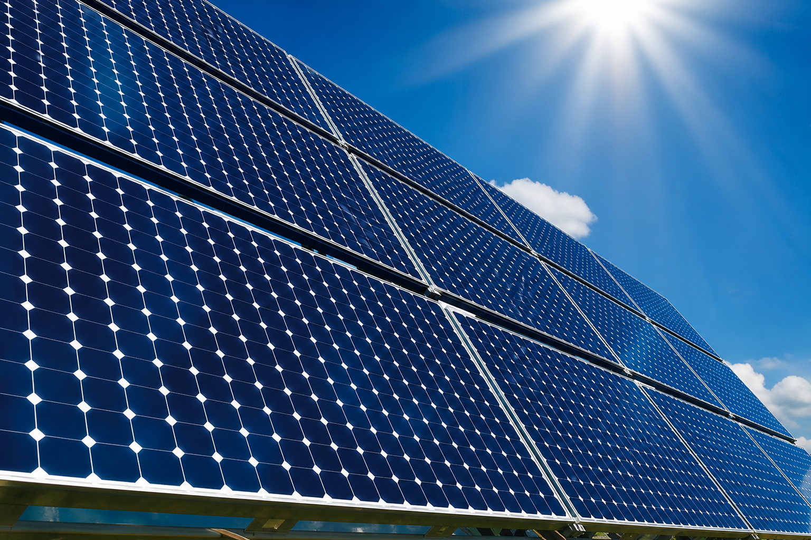
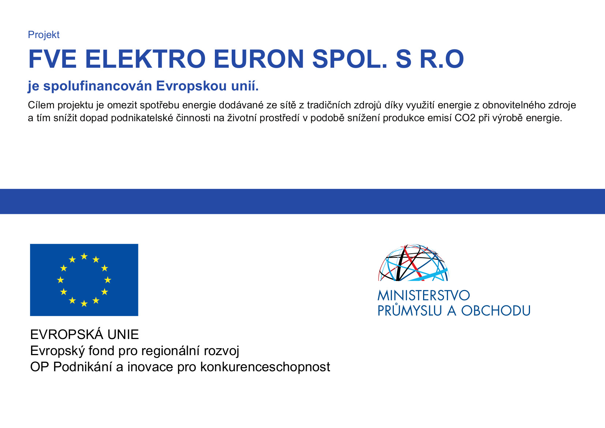

FVE na objektu ELEKTRO EURON
Po třech desítkách zpracovaných projektů FVE elektráren pro čerpání podpory z projektu Evropského fondu pro regionální rozvoj se nám povedlo získat podporu i pro vlastní FVE na objektu našeho sídla. Naše projekty na získávání čisté obnovitelné energie tak budeme moci posunout o krok dál — energie potřebná pro zpracování našich návrhů a výkresů bude napájena sluncem.

